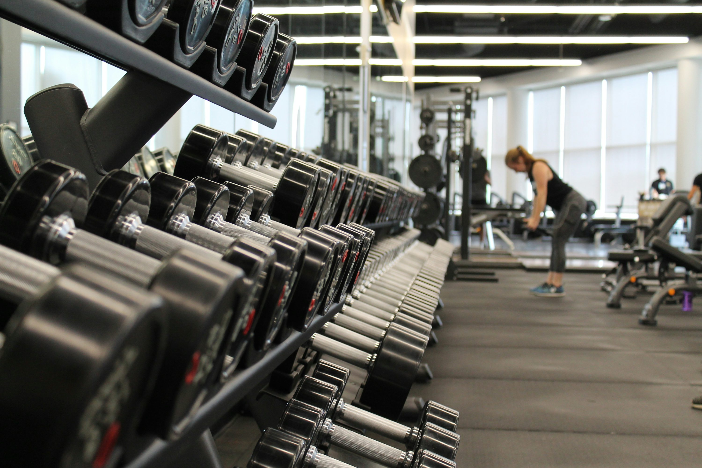

Biography
My name is Darijan Risteski, and I am 20 years old. I am currently a student at the Faculty of Computer Science and Engineering, where I am pursuing my passion for technology and software development.
I am deeply interested in web development, design, and continuously learning new skills to improve myself both personally and professionally. Throughout my studies, I have focused on gaining a solid foundation in programming languages, algorithms, and software engineering principles.
Besides my academic pursuits, I am a hardworking and motivated individual who strives for growth in all areas of life. I believe in setting goals, staying disciplined, and constantly challenging myself to reach new heights.
In my free time, I enjoy reading, going to the gym, playing football, traveling, and spending quality time with friends and family. These activities help me maintain balance and keep my mind fresh.
Education
I am currently studying at the Faculty of Computer Science and Engineering, pursuing a degree in Computer Science and Engineering.
During my studies, I have maintained a strong academic record.
My coursework includes programming, data structures, algorithms, databases, and software development methodologies.
I am always eager to learn more and develop skills that will help me excel in my future career.

Hobbies
Going to the Gym
I enjoy working out and going to the gym regularly. It helps me stay healthy, focused, and motivated. I believe fitness is important not just for the body, but also for building discipline and mental strength.

Playing Football
Football is one of my favorite hobbies. I love playing with friends whenever I get the chance. It teaches teamwork, quick thinking, and improves overall physical condition. I also enjoy watching professional matches and learning from the best players. I am a really huge fan of Barcelona and I hope I can see them play in the Camp Nou.
Traveling with Friends
Traveling with friends is one of the things I enjoy the most. Exploring new places, experiencing different cultures, and creating unforgettable memories together is something I truly value. Whether it's a weekend road trip or a summer vacation, every journey brings laughter, adventure, and stronger friendships.


Traveling
I have been fortunate to travel to many beautiful countries across Europe, each offering unique experiences and unforgettable memories. From the historic streets of Rome to the vibrant culture of Paris, every destination has broadened my perspective and inspired me in different ways.
Traveling allows me to learn about new cultures, meet people from diverse backgrounds, and discover stunning landscapes that fuel my creativity and personal growth. Whether it's wandering through charming old towns, tasting local cuisines, or exploring nature trails, I always come back refreshed and motivated.
Looking ahead, I dream of visiting America to experience its vast diversity — from the bustling cities like New York and Los Angeles to the breathtaking national parks like Yellowstone and the Grand Canyon. I believe traveling not only enriches my life but also helps me become a more open-minded and empathetic person.